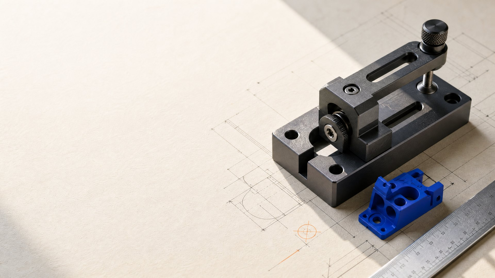

01 Dossiê de abertura · 2026
Desenvolvimento de Sistemas · Modelagem 3D
Código que resolve.
Modelos que materializam.
Sou João Marcelo, estudante técnico de Desenvolvimento de Sistemas e desenhista mecânico. Construo meu repertório entre interfaces, lógica e peças em três dimensões.

FUSION 360AvançadoUm portfólio técnico em movimento, com material já acessível para consulta e análise.
- 17
- anos
- 3º
- ano técnico
- 02
- frentes de criação
02 Linha de processo
Cada etapa deixa
um traço verificável.
Uma leitura cronológica do repertório: da base de formação às evidências publicadas.
Consultar currículo ↗- 01ETAPA 01⌘
Base em construção
Formação técnica em Desenvolvimento de Sistemas, conectando lógica, interfaces e organização de projetos.
3º ano técnico - 02ETAPA 02◇
Forma e precisão
Estudos de desenho mecânico e modelagem 3D desenvolvidos a partir de observação, medida e detalhamento.
SENAI · Fusion 360 - 03ETAPA 03▦
Projetos visíveis
Repositórios e publicações transformam aprendizado em evidência consultável.
GitHub + portfólio 3D - 04ETAPA 04→
Arquivo em expansão
O próximo passo é somar repertório e transformar cada experimento em resultado utilizável.
Processo contínuo
03 Índice de dossiês
Escolha uma frente
para aprofundar.

05 · Conexões
Vamos acompanhar
o próximo projeto.
Este hub reúne os dossiês e abre caminhos diretos para os materiais públicos do portfólio.